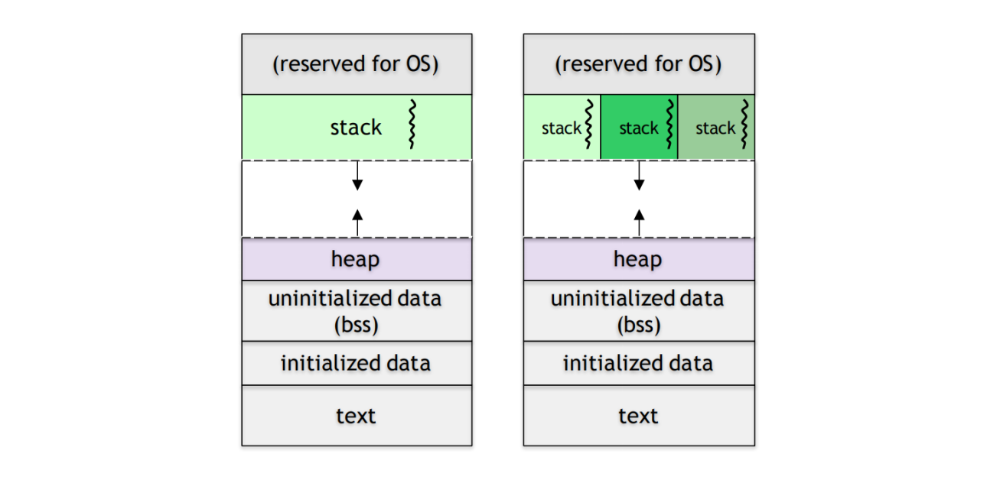
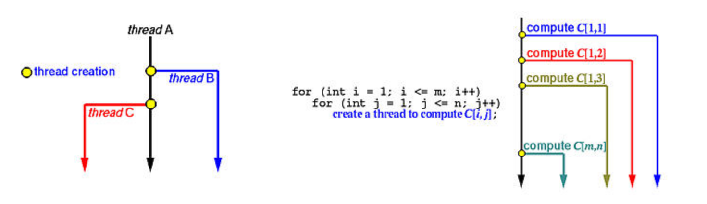
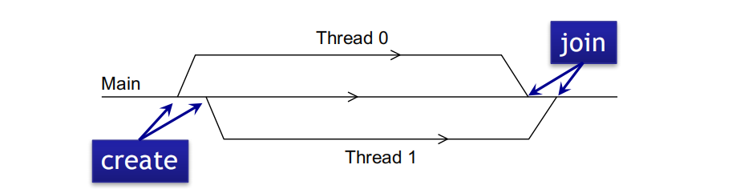

Pthread
The POSIX threading interface. The implementation of pthread depends on the platform. (e.g. Linux: kernel thread, Windows: Win32 threads)
Process vs Thread

| Property | Multi-processing | Multi-threading |
|---|---|---|
| Variables | copies all variables | share global variables |
| IDs | new process ID | same process ID, unique thread ID |
| Communication | explicitly communicate (e.g. pipe) | may communicate with return value or shared variables |
| Parallelism (one CPU) | concurrent | concurrent |
| Parallelism (multiple CPUs) | may be executed simultaneously | kernel threads may be executed simultaneously |
Operations
1 |
Compile and link with -pthread.
pthread_create
create a thread

1 | int pthread_create(pthread_t *thread, // pthread_t object |
Ref:
- https://pages.mtu.edu/~shene/NSF-3/e-Book/FUNDAMENTALS/thread-management.html
- http://man7.org/linux/man-pages/man3/pthread_create.3.html
pthread_join
wait for a thread

1 | int pthread_join(pthread_t thread, |
Ref: http://man7.org/linux/man-pages/man3/pthread_join.3.html
pthread_exit
exit a thread without exiting process
1 | void pthread_exit(void *retval); |
Ref: http://man7.org/linux/man-pages/man3/pthread_exit.3.html
pthread_detach
set thread to release resources
Ref: http://man7.org/linux/man-pages/man3/pthread_detach.3.html
pthread_equal
test two thread IDs for equality
Ref: http://man7.org/linux/man-pages/man3/pthread_equal.3.html
pthread_kill
send a signal to a thread
Ref: http://man7.org/linux/man-pages/man3/pthread_kill.3.html
pthread_cancel
send a cancellation request to a thread
Ref: http://man7.org/linux/man-pages/man3/pthread_cancel.3.html
pthread_self
find out own thread ID
Ref: http://man7.org/linux/man-pages/man3/pthread_self.3.html
Thread Attributes
A thread may be created as a
- joinable thread (the default)
- When it terminates, its exit state is still kept in the system until another thread calls
pthread_join()to obtain its return value
- When it terminates, its exit state is still kept in the system until another thread calls
- detached thread
- cleaned up automatically after thread terminates
- can’t
pthread_joinor obtain its return value
Basic management
Create (initialize with default values) and destroy a thread attribute object
Specifying stack information
Get and set the stack size in the attribute object for new threads
Thread scheduling attributes
Get and set the value of the schedule policy attribute of a thread attributes object
Detachable or joinable (undetachable)
Control whether the thread is created in the joinable state
Example
Set attribute to detached state
1 | int main () { |